|
|
| ascidians text index | photo index |
| Phylum Chordata | Subphylum Tunicata/Urochordata | Class Ascidiacea |
| Yellow
clustered bead ascidians Eudistoma sp.* Family Polycitoridae updated Mar 2020 Where seen? These clusters of yellow blobs are commonly seen on many of our Northern shores, on hard surfaces near the mid-water mark. Features: Each blob about 1cm across, somewhat columnar with a rounded top. Clusters of blobs form on boulders and larger rocks, usually near the base and under overhangs. Also on jetty pilings. Blue-dot margined flatworms have been seen near them, appearing to envelope a similarly shaped object. Do these worms eat the ascidian? |
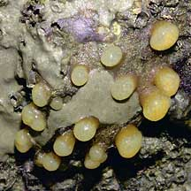 Labrador, Mar 05 |
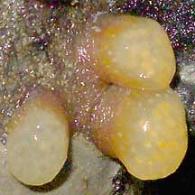 |

|
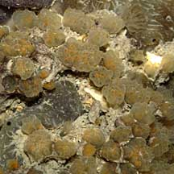 Tuas, Nov 03 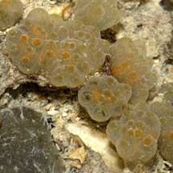 |
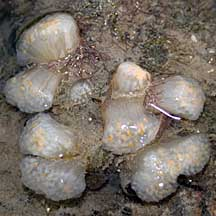 Chek Jawa, Sep 02 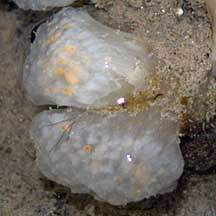 |
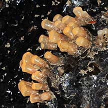 Changi, Jun 08 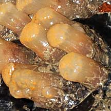 |
*Species are difficult to positively identify without examination of internal parts.
On this website, they are grouped by external features for convenience of display.
| Yellow clustered bead ascidians on Singapore shores |
On wildsingapore
flickr
|
| Other sightings on Singapore shores |
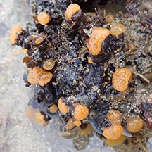 Cyrene, Jun 20 Photo shared by Kelvin Yong on facebook. |
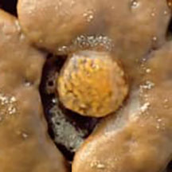 Beting Bemban Besar, Mar 20 Photo shared by Kelvin Yong on facebook. |
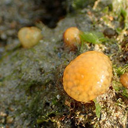 Terumbu Pempang Laut, Dec 18 Photo shared by Liz Lim on facebook. |
References
|